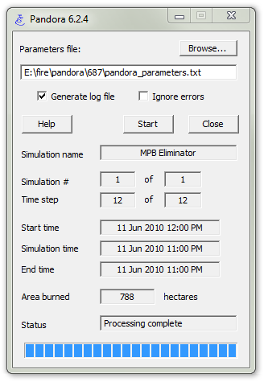

Overview
Pandora is a Windows application that gives users the ability to batch-run basic Prometheus simulations without using the Prometheus user interface. All the parameters for the simulations are specified in a single text file, including the locations of data input files such as fuels, terrain, and weather. Any number of simulations can be specified in the parameters text file. The input window, shown here, is optional and can be suppressed with a command line option.
In Greek mythology, Pandora was the wife of Prometheus' brother, Epimetheus. Whereas Prometheus means "forethought", Epimetheus means "afterthought". Pandora, whose name means "all gifts", has a bad reputation because the gods gave her a box or jar as a dowry. Prometheus warned her not to open the box, but her curiosity got the better of her. When she opened the box, out came all the evil in the world. (This, however, is not how the Pandora program works.)